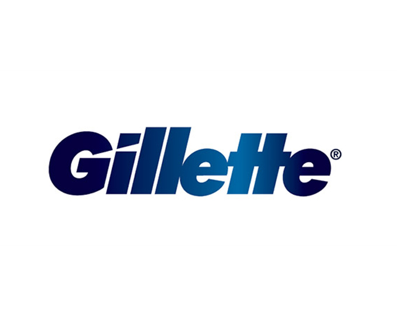

홈 > 브랜드 매거진 > 질레트
질레트
질레트(Gillette)는 1901년 킹 질레트가 미국에서 설립한 면도기·면도용품 브랜드다. 교체형 안전면도기를 대중화했으며, 현재 P&G 산하의 글로벌 그루밍 대표 브랜드다.
산업 분야 뷰티·퍼스널케어 · 공개 등급 자료 기반 · 브랜드 평가 4.3 ★


한눈에 보는 브랜드
질레트(Gillette)는 1901년 킹 질레트가 미국에서 설립한 면도기·면도용품 브랜드다. 교체형 안전면도기를 대중화했으며, 현재 P&G 산하의 글로벌 그루밍 대표 브랜드다.
브랜드 관점
질레트는 razor-and-blades 모델의 원조로, 면도 기술 혁신을 통해 글로벌 그루밍 시장을 주도한다. 헤리티지, 핵심 제품, 모회사 구조를 함께 보면 뷰티·퍼스널케어 안에서의 위치가 또렷해진다.
시작과 성장
질레트는 1901년 세일즈맨으로 일하던 킹 질레트가 설립한 미국 면도기 브랜드이다. 킹 질레트는 얼굴이 다치지 않는 최초의 안전면도기를 개발했으며, 제1차 세계대전 당시 군인들에게 안전면도기가 보급되면서 질레트라는 이름이 알려지게 되었다.
이후 질레트는 꾸준한 신제품 개발과 규모 확장으로 전 세계 1위 면도기 브랜드로 자리매김했다.
브랜드 아이덴티티
질레트는 '남자를 위한 최상의 선택'이라는 슬로건을 내세우며 남성 고객을 타깃으로 한 브랜딩 활동을 펼치고 있다. 그중에서도 스포츠 마케팅에 집중하는 질레트는 주로 남성미 강한 스포츠 선수를 모델로 선정하고 스포츠 관련 캠페인을 개최하여 브랜드 이미지를 강화하고 있다.
확장 지식
미국 보스턴에 거점을 둔 P&G 산하 브랜드로, '면도기는 싸게, 면도날은 반복 판매'하는 razor-and-blades 모델의 원조로 꼽힌다.
제품과 서비스
수동·전동 면도기와 면도날, 셰이빙 젤·애프터셰이브 등 그루밍 용품을 전개한다. Mach3, Fusion, 여성용 Venus 등이 대표 라인이다.
사람들
창업자는 킹 질레트(King C. Gillette)로, 일회용 면도날을 갖춘 안전면도기를 고안했다.
현재 상태
타임라인
BI/CI 변천사
함께 읽을 브랜드
 뷰티·퍼스널케어 · 편집 검수니베아
뷰티·퍼스널케어 · 편집 검수니베아니베아(NIVEA)는 1911년 독일 바이어스도르프(Beiersdorf)가 출시한 글로벌 스킨케어 브랜드다. 세계 최초의 안정적인 유중수(油中水) 유화 크림을 선보이...
 뷰티·퍼스널케어 · 매거진 완성러쉬
뷰티·퍼스널케어 · 매거진 완성러쉬러쉬는 영국의 뷰티·퍼스널케어 브랜드로, 성분, 사용감, 패키지, 이미지 언어가 구매 판단에 직접 연결되는 영역입니다.
 뷰티·퍼스널케어 · 자료 기반달바
뷰티·퍼스널케어 · 자료 기반달바달바(d'Alba)는 달바글로벌이 전개하는 대한민국의 프리미엄 비건 스킨케어 브랜드다. 2016년 론칭했으며 화이트 트러플 성분의 미스트 세럼으로 글로벌 베스트셀러를...
메디
메디힐
뷰티·퍼스널케어 · 디렉토리메디힐메디힐는 뷰티·퍼스널케어 브랜드로, 성분, 사용감, 패키지, 이미지 언어가 구매 판단에 직접 연결되는 영역입니다.
클리
클리오
뷰티·퍼스널케어 · 디렉토리클리오클리오는 뷰티·퍼스널케어 브랜드로, 성분, 사용감, 패키지, 이미지 언어가 구매 판단에 직접 연결되는 영역입니다.
토리
토리든
뷰티·퍼스널케어 · 디렉토리토리든토리든는 뷰티·퍼스널케어 브랜드로, 성분, 사용감, 패키지, 이미지 언어가 구매 판단에 직접 연결되는 영역입니다.
 뷰티·퍼스널케어 · 매거진 완성더바디샵
뷰티·퍼스널케어 · 매거진 완성더바디샵더바디샵은 화장품을 윤리적 소비와 사회적 메시지를 담는 매개로 확장한 브랜드다. 제품의 효능만큼이나 동물실험 반대, 공정 거래, 환경 의식 같은 태도가 브랜드 선택의...
 뷰티·퍼스널케어 · 편집 검수도브
뷰티·퍼스널케어 · 편집 검수도브도브(Dove)는 유니레버가 1957년 출시한 비누·바디케어 퍼스널케어 브랜드이다.